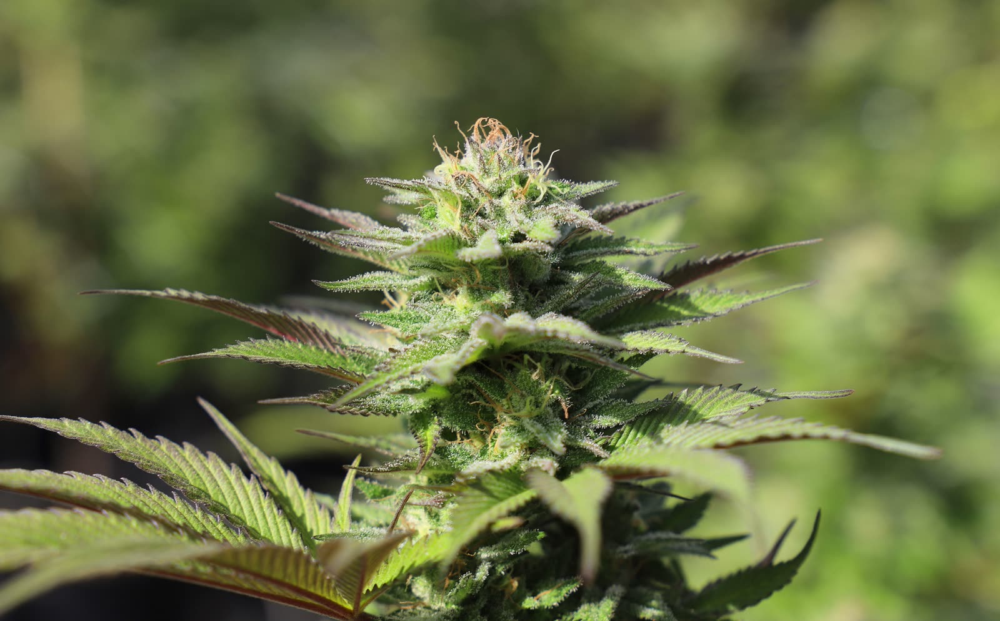
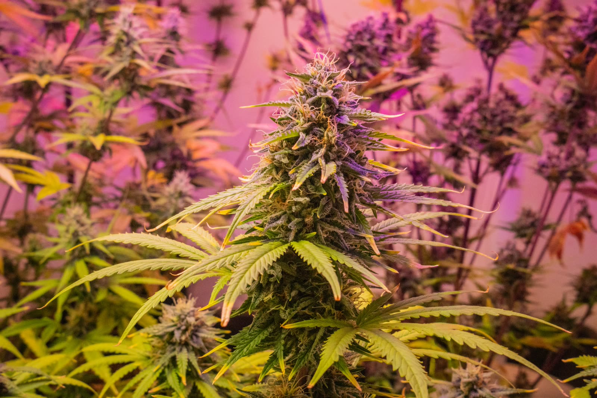
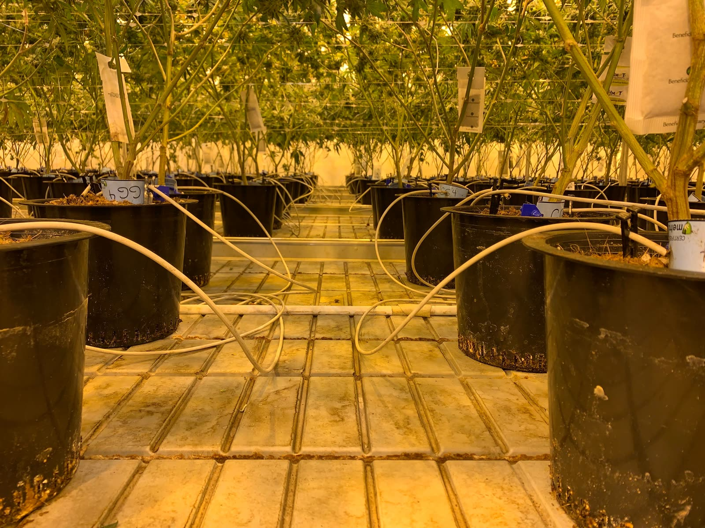
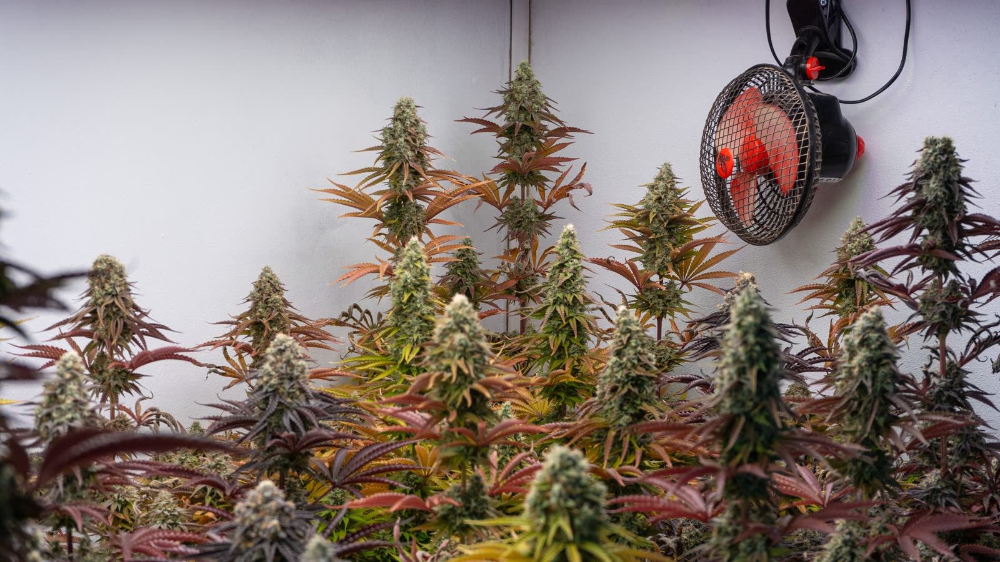
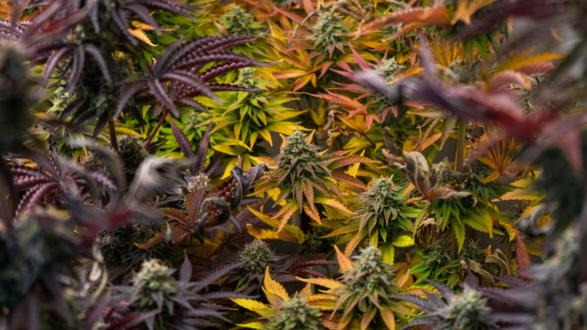

Ambiente controlado, sin sorpresas
Temperatura, humedad y fotoperíodo monitoreados durante todo el ciclo de la planta.
Contenido informativo sobre un club de membresía cannábico regulado por la Ley 19.172. Para continuar, confirmá tu edad.
Este contenido no está disponible para menores de edad.
Podés informarte sobre consumo responsable en ircca.gub.uy.
Un club cannábico sin fines de lucro en Uruguay: cultivamos juntos, con trazabilidad total y dentro del marco regulado por el IRCCA.
Así tratamos la flor: 1.282 fragmentos escaneados de un cogollo real, ensamblados con la misma precisión con la que registramos cada gramo del club.
Arrastrá para explorarDe la tierra a la comunidad, sin desvíos.
Medí lo que consumís, conocé su origen y confiá en el proceso — con el respaldo del regulador y de una comunidad que cultiva para sí misma, no para vender.


Somos una asociación civil de socios que cultiva cannabis de forma colectiva, controlada y sin fines de lucro. Cada flor que llega a un socio fue cultivada, cosechada y registrada dentro del club — sin mercado negro, sin intermediarios, sin incertidumbre.



Temperatura, humedad y fotoperíodo monitoreados durante todo el ciclo de la planta.
Secado colgado, curado en frasco y descarte de todo material que no cumpla el estándar del club.
Cada planta tiene identificación única. El recorrido completo queda registrado y auditable ante el IRCCA.
Asambleas, decisiones colectivas y cuota transparente que solo cubre los costos del cultivo.
La ley uruguaya permite acceder al cannabis por tres vías: farmacias, autocultivo o clubes de membresía. Si elegís el club, este es el camino.
Ser mayor de 18 años y ciudadano uruguayo o residente permanente.
La ley permite una sola vía de acceso a la vez: farmacia, autocultivo o club.
Te acompañamos en el trámite de inscripción como socio del club ante el regulador.
Hasta 40 gramos por mes, cultivados por el club, retirados personalmente en sede.
Desde diciembre de 2013, Uruguay regula la producción, distribución y consumo de cannabis. Los clubes de membresía son una de las tres vías legales de acceso.
El club opera con autorización y fiscalización del IRCCA: registro de socios, límites de plantas y controles periódicos.
Entre 15 y 45 socios, hasta 99 plantas en floración y distribución exclusiva entre miembros registrados. Nada sale del club.
Promovemos información basada en evidencia y reducción de riesgos y daños. El cannabis no se vende online ni a no socios.
Sí. Los clubes de membresía cannábicos están regulados en Uruguay por la Ley 19.172 desde 2013 y funcionan con autorización y control del IRCCA.
Cualquier persona mayor de 18 años que sea ciudadana uruguaya (natural o legal) o residente permanente, y que no esté registrada en otra vía de acceso (farmacia o autocultivo).
Hasta 40 gramos por mes por socio, con un máximo de 480 gramos al año, según los topes que fija la regulación.
No. La ley permite una sola vía de acceso a la vez. Si estás registrado en farmacia o como autocultivador, tenés que darte de baja antes de asociarte al club.
El club no tiene fines de lucro: la cuota social solo cubre los costos reales de cultivo, sede y funcionamiento. Escribinos por WhatsApp y te pasamos el detalle actualizado.
Información clara, cupos limitados por ley y una comunidad que hace las cosas bien.
Hablemos ↗